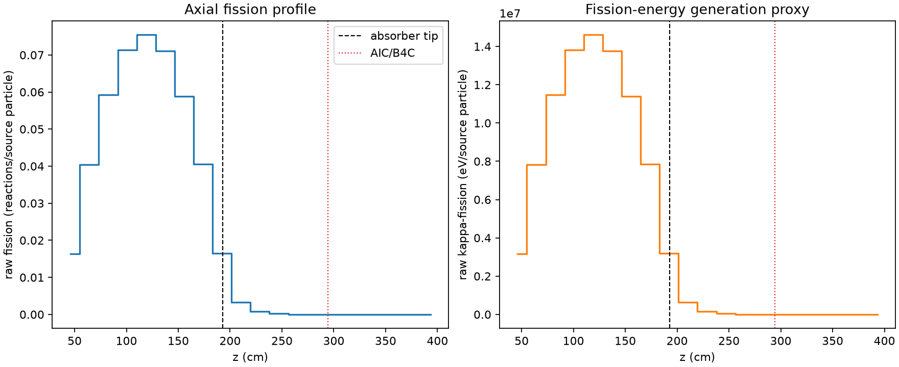
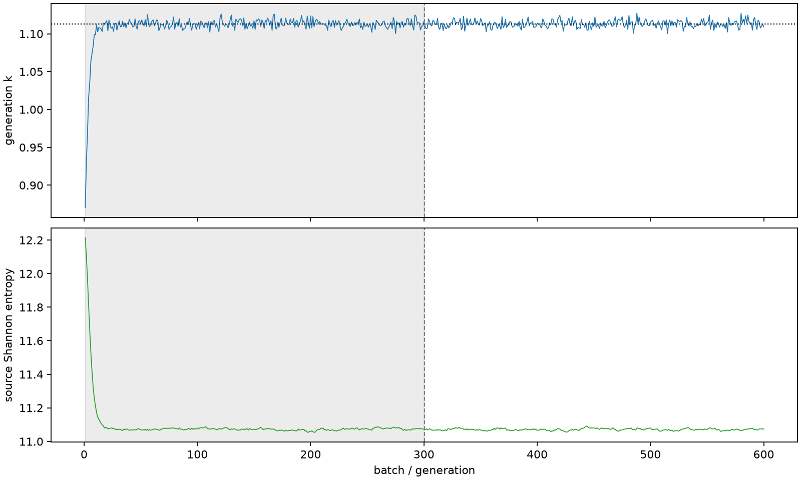

| field | value |
|---|---|
| experiment | V2-ADAPTIVE_01-0022 |
| k | 1.113064158510476 |
| MC standard error | 0.00017952166757913138 |
| seconds | 1066.4776999879978 |
| acceptance | not_assessed |
| convergence | review_required |
Completed is output integrity only; physical and statistical review required. Zero tallies do not prove zero production or zero uncertainty.
| diagnostic | value |
|---|---|
| geometric fuel voxels | 5280 |
| zero fission tally voxels | 1000 |
| low signal fuel voxels | 1958 |
| low signal fission share | 8.733908614997184e-05 |
| low signal kappa share | 8.737372720401871e-05 |
| important fission share | 0.9501255670293544 |
| previous filter included | 3322 |
| duration estimate s | 1562.5173488400023 |
| actual minus estimate s | -496.0396488520046 |
| fission relative MC error | statistics |
|---|---|
| all_geometric_fuel | {"voxels": 5280, "positive_mean_voxels": 4280, "zero_mean_voxels": 1000, "undefined_relative_error_voxels": 1000, "median": 0.012222728350959883, "p95": 0.8661808360748713, "maximum": 1.0000000000000002} |
| low_signal | {"voxels": 1958, "positive_mean_voxels": 958, "zero_mean_voxels": 1000, "undefined_relative_error_voxels": 1000, "median": 0.5668480097500431, "p95": 1.0, "maximum": 1.0000000000000002} |
| important_95pct | {"voxels": 2077, "positive_mean_voxels": 2077, "zero_mean_voxels": 0, "undefined_relative_error_voxels": 0, "median": 0.0064864667750855615, "p95": 0.01212811385174716, "maximum": 0.01444770420605223} |
| outside_previous_filter | {"voxels": 1958, "positive_mean_voxels": 958, "zero_mean_voxels": 1000, "undefined_relative_error_voxels": 1000, "median": 0.5668480097500431, "p95": 1.0, "maximum": 1.0000000000000002} |
| kappa_fission relative MC error | statistics |
|---|---|
| all_geometric_fuel | {"voxels": 5280, "positive_mean_voxels": 4280, "zero_mean_voxels": 1000, "undefined_relative_error_voxels": 1000, "median": 0.012205907882758747, "p95": 0.8661751854330719, "maximum": 1.0000000000000002} |
| low_signal | {"voxels": 1958, "positive_mean_voxels": 958, "zero_mean_voxels": 1000, "undefined_relative_error_voxels": 1000, "median": 0.5659472729866932, "p95": 1.0, "maximum": 1.0000000000000002} |
| important_95pct | {"voxels": 2077, "positive_mean_voxels": 2077, "zero_mean_voxels": 0, "undefined_relative_error_voxels": 0, "median": 0.0064781246375666636, "p95": 0.01211394768745631, "maximum": 0.014426892161810246} |
| outside_previous_filter | {"voxels": 1958, "positive_mean_voxels": 958, "zero_mean_voxels": 1000, "undefined_relative_error_voxels": 1000, "median": 0.5659472729866932, "p95": 1.0, "maximum": 1.0000000000000002} |
| axial bin | fission share | kappa-fission share |
|---|---|---|
| 1 | 0.03610670196357229 | 0.03610846311759104 |
| 2 | 0.08897020894388682 | 0.08896931388412639 |
| 3 | 0.13037671680353863 | 0.13037555839011658 |
| 4 | 0.15717397824922083 | 0.1571724403949329 |
| 5 | 0.16608942708804478 | 0.1660875212910634 |
| 6 | 0.15665848266761662 | 0.1566570640910307 |
| 7 | 0.1295015932352006 | 0.12950038011994855 |
| 8 | 0.08916398003995911 | 0.08916303707794179 |
| 9 | 0.036358492415050944 | 0.03636187537315225 |
| 10 | 0.0072569952311366875 | 0.00725990740636494 |
| 11 | 0.0017554498986018913 | 0.0017561966436445673 |
| 12 | 0.0004338143736326293 | 0.00043401492069255056 |
| 13 | 0.00011302977143883092 | 0.00011308473512549878 |
| 14 | 3.2880780488079335e-05 | 3.288976409235556e-05 |
| 15 | 6.9249464823521965e-06 | 6.927796173816191e-06 |
| 16 | 1.1855775821265735e-06 | 1.1868705423382117e-06 |
| 17 | 1.380145469050122e-07 | 1.3812346036071584e-07 |
| 18 | 0.0 | 0.0 |
| 19 | 0.0 | 0.0 |
| 20 | 0.0 | 0.0 |
Histories include the inactive-to-active transition at batch 300. kappa-fission approximates fission energy production, not total heat deposition.

